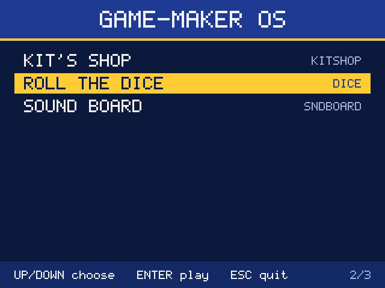
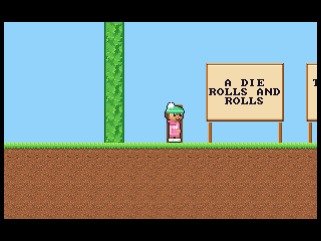
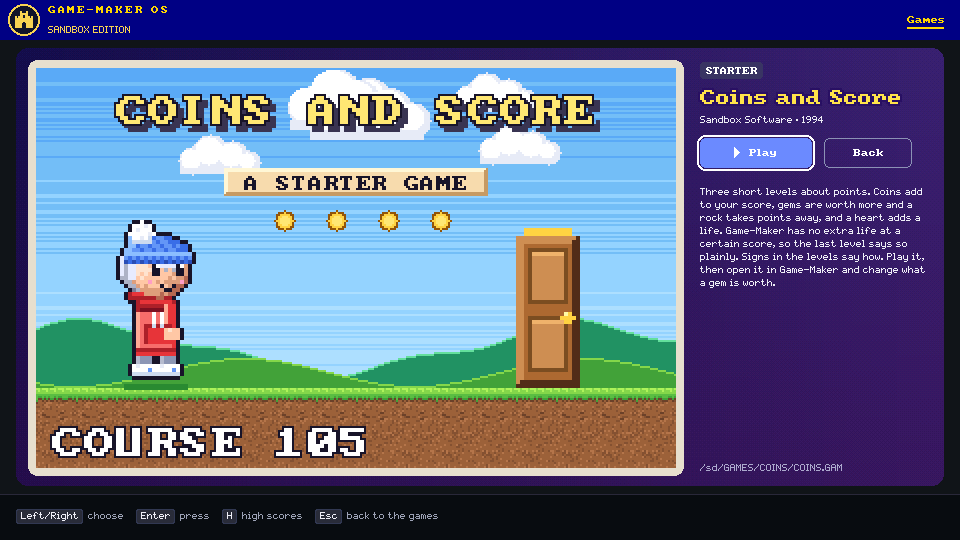
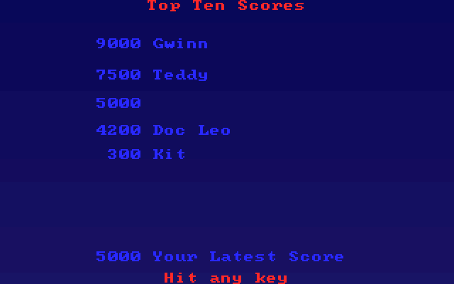

Sandbox Edition / Raspberry Pi Zero W
Game-Maker OS
A Raspberry Pi, an SD card, and a library of Game-Maker games on your TV.
Original games / shared play core
A Game-Maker machine
Game-Maker OS plays games made with RSD Game-Maker. Browse category tabs and title screens, open a game's details, and play from its original DOS files or a packed .GMP game.
GMOS.ELF is a native C/C++ program loaded from the SD card by sandbox-kernel, a bare-metal Raspberry Pi kernel. The kernel handles the hardware; Game-Maker OS handles the library and games.
The games list renders at 960 × 540, doubled on a 1080p HDMI screen. Games use the same gmcore play core as Game-Maker Pocket, with pages between scenes, fades, and levels at 18.2 ticks per second.
For now, a development computer sends key presses over USB. A keyboard, gamepad, and TV remote connected directly to the Pi are planned. See what works and what is still pending.
From the library to the game




These are existing repository images from host renders, not photographs of a TV. See gameplay checks and high-score notes.
What you need
The Pi and screen
- A Raspberry Pi Zero W v1.1, the first target board.
- An SD card with a FAT32 partition and sandbox-kernel's boot files.
- An HDMI screen or TV, an HDMI connection for the Pi, and power.
- A computer with a USB connection to the Pi for installation, logs, and current input.
The target setup includes a Waveshare 2.13 inch e-Paper HAT (V4). Game-Maker OS's e-ink status art is prepared but is not wired into the runtime.
The software and games
- A compatible sandbox-kernel build and its
scripts/usb_kernel.pytool. - The Arm GNU toolchain to build the program; C/C++ tools and Python for host tests.
- Game-Maker game files. Game-Maker: Sandbox Edition provides games and card preparation scripts.
The SDK and play core are vendored in this repository and pinned by commit. Use the kernel requirements in the build notes; newer features require newer kernel ABIs.
Build / transfer / play
Install on a Pi
Start with a Pi that boots sandbox-kernel from its FAT32 card and is connected to your computer over USB. Follow the kernel's setup instructions for that base system. The steps below follow this repository's documented USB install path.
Build the native program
In a checkout of Game-Maker OS, with the Arm GNU toolchain available:
make make testmakeproducesbuild/GMOS.ELF. SetTOOLCHAINto your compiler prefix when needed. Host tests verify behavior and render sample frames; they do not replace Pi testing.Transfer the program and a game
Run the kernel's
usb_kernel.pyfrom your computer. Replace<port>with the Pi's serial port and<game-folder>with the game folder containingDICE.GAMand its assets.usb_kernel.py <port> put build/GMOS.ELF usb_kernel.py <port> putgame <game-folder> DICEThis installs
/OS/GMOS.ELFand/GAMES/DICE/. USB installation uses uppercase 8.3 names.Optionally install
LIBRARY.JSL, produced by Sandbox Edition'sweb/scripts/gmosCard.ts, for titles, categories, and blurbs:usb_kernel.py <port> put LIBRARY.JSLPacked games can go in
GAMESorPOCKET; see GMP instructions and limits.Run and send keys
usb_kernel.py <port> run GMOS.ELF usb_kernel.py <port> key down down enter usb_kernel.py <port> key escArrows move through games. Enter opens details; select Play and press Enter to start. Arrows, Space, and Enter play; Esc leaves the game. Press H on the grid or details view for Top Ten.
Desktop copying of long-named folders, ZIP games, and supported ZIP-based EXEs is a host-qualified candidate requiring the paired ABI 1.5 kernel. Its FAT-card/Pi workflow still needs hardware acceptance. See copying games and verification limits.
JS.ELF / QuickJS-ng
Make your own shell
JS.ELF is a separate JavaScript app runtime, documented as a spike. Write a small page-like app using document.createElement, CSS-like styles, events, timers, and requestAnimationFrame. Layout and drawing stay native.
A <game> element runs the same Game-Maker play core. The HELLO example shows a game grid: Enter plays a game, and Esc returns to the page.
Start with apps/HELLO. Its script lives at /OS/APPS/HELLO/MAIN.JS; an optional INDEX.HTM supplies layout. Build with make js to produce build/JS.ELF.
The app path
/OS/
JS.ELF
AUTORUN.TXT
APPS/
HELLO/
MAIN.JS
INDEX.HTMAUTORUN.TXT can select JS.ELF on line 1 and APPS/HELLO on line 2. F10 or cooperative sys.exit() returns an app to the built-in picker.
This is a limited browser-like API: no fetch, modules, mouse, or touch. GMOS.ELF does not launch JS.ELF. App switching has host checks; the documented Pi smoke procedure is not a hardware result. See app lifecycle and recovery limits.
What works, what is pending
The README confirms the games list and gameplay on a Pi Zero W. Other components have different levels of validation; implemented code and host tests do not by themselves establish a shipped hardware feature.
- Games list and gameplayRunning on the board
- Category tabs, title pictures, details, and native gameplay. Roll the Dice and five other Starters matched host frames tick for tick. Gameplay evidence.
- Demo previewsDocumented implementation
- After 3 seconds on details, an available
.RECdemo plays silently in the picture. Any key stops it. The README and demo guide describe this behavior; host checks verify playback. New demo recording is not claimed. - Top TenLinked / card checks pending
- The high-score screen and file layer are linked into GMOS.ELF. Name entry requires kernel ABI 1.7; real-card save acceptance is still pending. High-score status.
- F5/F6 save and loadNot implemented
- A DOS save-file byte codec exists, but there is no live gameplay snapshot bridge or save/load command. Save codec and limits.
- Sound on the TVPending integration and review
- No sound on the board yet. Games log
SNDevents for a computer to play. The PC-speaker producer and VOC decoder/mixer are unlinked host qualification components; they do not enable HDMI audio. - Keyboard, gamepad, remotePlanned direct input
- Current input comes from the development computer over USB through the kernel's synthetic input device. Direct USB keyboard/gamepad, HDMI-CEC, and IR remote support are not claimed as shipped.
- E-ink status displayArt prepared / not wired
- The target includes the Waveshare HAT, but boot-art notes say the e-ink art is not wired. The desk-buddy display remains a plan.
Built on shared work
gmcore is shared with Game-Maker Pocket, the Pocket Player in Game-Maker: Sandbox Edition. It is vendored unchanged and pinned by commit, keeping both players on the same play core.
Game-Maker: Sandbox Edition carries forward RSD Game-Maker 3.0, originally by Recreational Software Designs (1991–1995). Its source was released under the MIT License in 2014. Game-Maker OS and sandbox-kernel are MIT licensed; see the license and full credits and third-party notices.